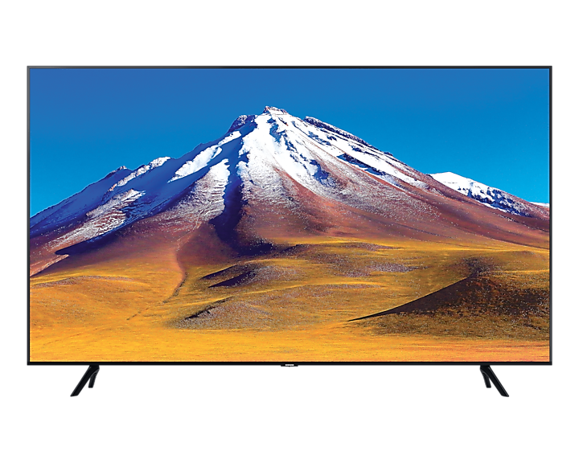
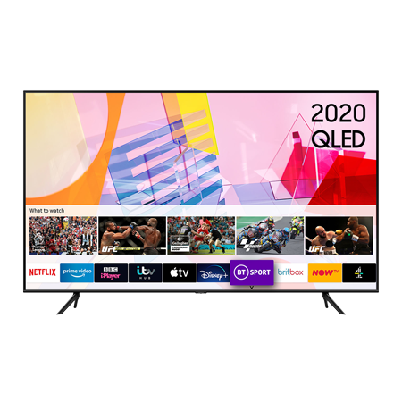
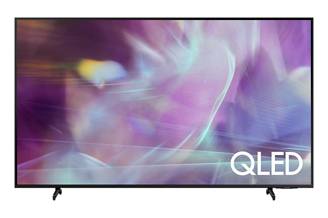
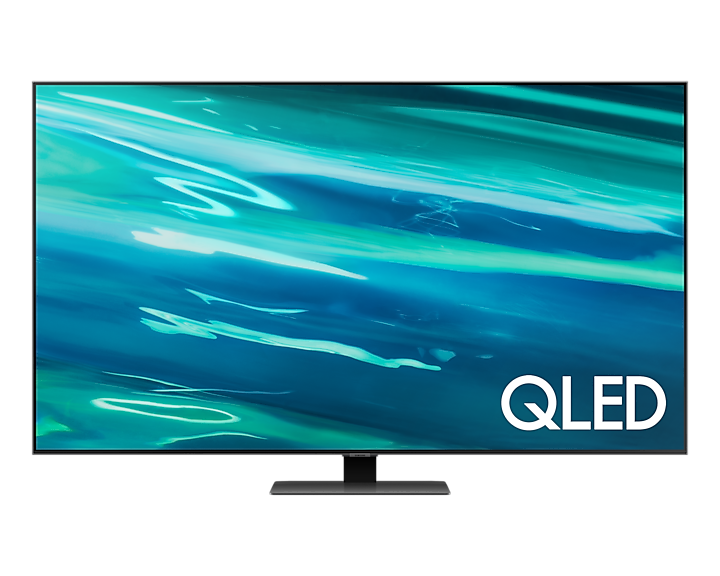
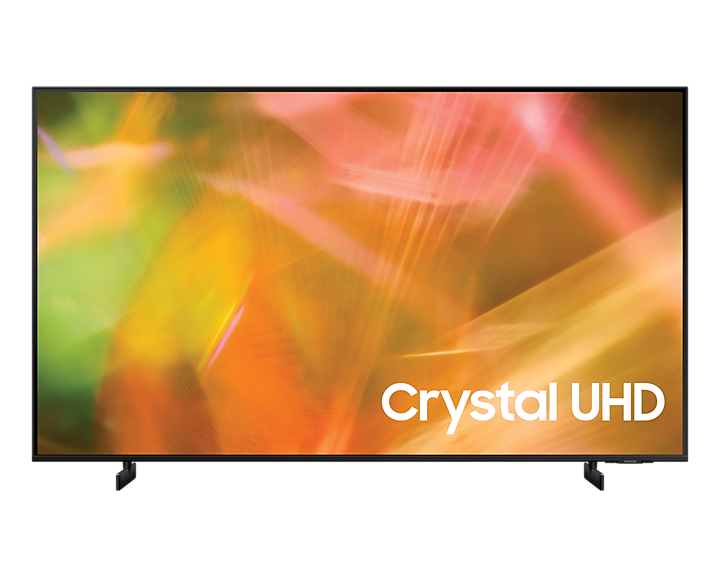

65" Samsung UE65TU7092
- Uhlopriečka: 65" (165,1 cm)
- Rozlíšenie displeja: 3840 × 2160
- Maximálne rozlíšenie: 4K Ultra HD
- Technológia: LCD LED
- Obnovovacia frekvencia panelu: 50 / 60 Hz
- Multimediálne funkcie Herný režim, Prehrávanie z USB, Skylink Fast Scan, Hotelový režim
Základné parametre
649,00 €
75" Samsung QE75Q60T
- Uhlopriečka: 75" (190,5 cm)
- Rozlíšenie displeja: 3840 × 2160
- Maximálne rozlíšenie: 4K Ultra HD
- Technológia: QLED
- Obnovovacia frekvencia panelu: 50 / 60 Hz
- Multimediálne funkcie: Prehrávanie z USB
Základné parametre
2 299,00 €
85" Samsung QE85Q60A
- Uhlopriečka: 85" (215,9 cm)
- Vlastnosti obrazu: HDR
- Maximálne rozlíšenie: 4K Ultra HD
- Technológia: QLED
- Obnovovacia frekvencia panelu: 50 / 60 Hz
- Herný režim, Prehrávanie z USB, Nahrávanie na USB, Skylink Fast Scan, Hotelový režim
Základné parametre
2 849,00 €
65" Samsung QE65Q80A
- Uhlopriečka: 65" (165,1 cm)
- Rozlíšenie displeja: 3840 × 2160
- Maximálne rozlíšenie: 4K Ultra HD
- Technológia: QLED
- Obnovovacia frekvencia panelu: 100 / 120 Hz
- Multimediálne funkcie: Herný režim, VRR, Prehrávanie z USB, Nahrávanie na USB, Skylink Fast Scan, Hotelový režim, PIP, Svetelný senzor
Základné parametre
1 199,00 €
43" Samsung UE43AU8072
- Uhlopriečka: 43" (109,22 cm)
- Rozlíšenie displeja: 3840 × 2160
- Maximálne rozlíšenie: 4K Ultra HD
- Technológia: LCD LED
- Obnovovacia frekvencia panelu: 50 / 60 Hz
- Multimediálne funkcie: Herný režim, Prehrávanie z USB, Skylink Fast Scan, Hotelový režim
Základné parametre
459,00 €